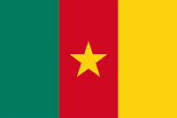

About Me
My name is Moise. I was born in Cameroon, in the city of Bertoua, and currently live in Yaounde. I am a student at BYUI. My family is very important to me, and I enjoy spending time with them. I love exploring new places and have a passion for new technologies.
Yaounde, Cameroon

Cameroon is located in Central Africa and is known for its diverse geography, ranging from beaches, mountains, rainforests, and savannas. It is home to a rich variety of plant and animal species, with many unique to the region. The country is best known for its Mount Cameroon, the highest peak in West Africa, and its vibrant cultural heritage, featuring over 250 indigenous languages.